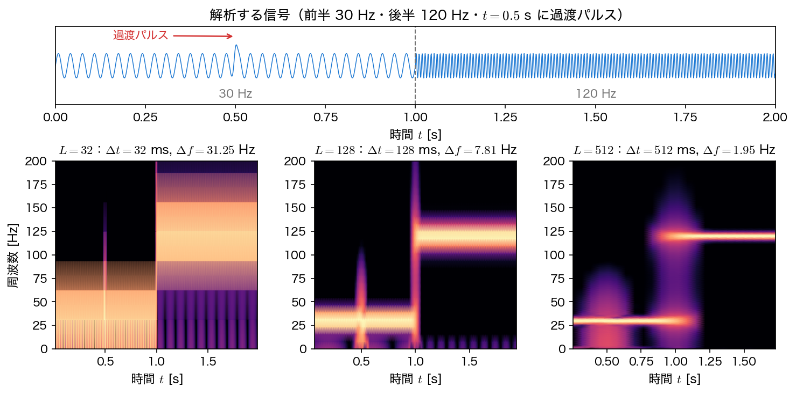
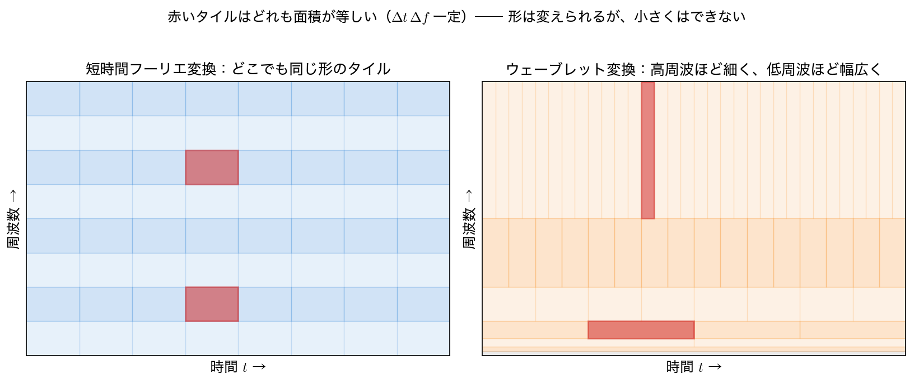

短時間フーリエ変換と時間周波数分解能
第2〜4回のフーリエ変換は、信号 全体 を一つの周波数スペクトルに写す変換だった。本ページでは、その見方が通用しない 非定常 な信号を扱うために 短時間フーリエ変換（short-time Fourier transform, STFT） を導入し、そこに必ずついてまわる時間分解能と周波数分解能のトレードオフを、不確定性原理 として定量化する。
定常性の仮定が破れるとき
フーリエ変換
は、全時刻にわたる積分である（この積分がそのまま収束するのは \(x\in L^1\) のときで、\(L^2\) の信号に対しては Plancherel の定理を通じて \(L^2\) の意味で定義する。以下ではこの区別は本質ではないので触れない）。時刻ごとの寄与は積分の中で足し合わされてしまうので、どの周波数が含まれるか は分かっても、いつ含まれていたか は振幅スペクトルからは読めない。
このことは、信号を時間反転してみればはっきりする。\(x(-t)\) のフーリエ変換は \(X(-f)\) で、実信号なら \(|X(-f)|=|X(f)|\) だから、時間を逆向きに再生しても振幅スペクトルは変わらない。前半 30 Hz・後半 120 Hz の信号と、前半 120 Hz・後半 30 Hz の信号を、フーリエ変換は区別できない。
import numpy as np
import scipy.signal as ss
fs = 1000.0 # サンプリング周波数 [Hz]
t = np.arange(0, 2.0, 1/fs)
x = np.where(t < 1.0, np.sin(2*np.pi*30*t), np.sin(2*np.pi*120*t))
x = x + 1.5*np.exp(-((t - 0.5)/0.006)**2) # t=0.5 s の過渡パルス
X1 = np.abs(np.fft.rfft(x))
X2 = np.abs(np.fft.rfft(x[::-1])) # 時間を反転した信号
f = np.fft.rfftfreq(len(x), 1/fs)
pk, _ = ss.find_peaks(X1, height=X1.max()*0.3)
print("ピーク周波数:", np.round(f[pk], 1), "Hz")
d = np.abs(X1 - X2).max()
print(f"時間反転した信号との振幅スペクトルの最大差 = {d:.2e}")
スペクトルは 30 Hz と 120 Hz に正しくピークを出す。しかし時間反転した信号との差は \(10^{-13}\)（機械精度）で、両者は振幅スペクトル上で完全に同一 である。\(X(f)\) 自体は可逆なので順番の情報が消えたわけではなく、位相 \(\arg X(f)\) には残っている。ただしその位相は全周波数にわたって薄く分散しており、雑音にも弱く、目で見て「いつ何が起きたか」を読むのには向かない。時刻を素直に読みたければ、変換のしかたそのものを変えるほかない。
定常・非定常
確率過程が （広義）定常（wide-sense stationary） であるとは、平均が時刻によらず一定で、自己共分散が 2 時刻の 差 だけで決まる（絶対時刻に依らない）ことをいう。このとき初めてパワースペクトル密度が時刻によらない量として意味をもつ。第4回のパワースペクトル密度・Welch 法は、この定常性を前提に「平均的なスペクトル」を精度よく推定する手法だった。音声・音楽・地震波・機械振動のように、統計的性質が時間とともに変わる信号は 非定常（non-stationary） で、平均をとってしまうと肝心の変化が消える。非定常信号には、時間と周波数を 同時に 表す道具が要る。
短時間フーリエ変換とスペクトログラム
最も素直な発想は、信号を短く区切って、その区間だけフーリエ変換する ことである。区間を時間軸上でずらしていけば、各時刻でのスペクトルが並ぶ。これが短時間フーリエ変換で、窓関数 \(w(t)\)（第4回で導入した、区間の端をなめらかに落とす関数）を使って
と書ける。\(\tau\) が「いつ」、\(f\) が「どの周波数」を指す 2 変数の関数である（本ページで扱う窓 \(w\) はすべて実数値なので上の形でよい。一般の複素窓を許すなら \(\overline{w(t-\tau)}\) と共役をとる）。その大きさの 2 乗
を スペクトログラム（spectrogram） と呼び、横軸 \(\tau\)・縦軸 \(f\) の濃淡図として描く。音声解析で「声紋」として見慣れた図がこれである。
離散信号では、長さ \(L\) サンプルの窓を \(H\) サンプルずつずらしながら FFT する。scipy.signal.spectrogram は nperseg=L（窓長）と noverlap（重ね幅、\(L-H\)）でこれを行う。第4回の Welch 法とアルゴリズムはほぼ同じだが、Welch は各区間のスペクトルを平均して 1 本にする のに対し、STFT は平均せず時刻ごとに並べて残す 点が違う。定常なら平均が得で、非定常なら並べるのが得、という使い分けになる。
窓長のトレードオフ
窓長 \(L\) をどう選ぶかが STFT の要である。\(L\) を決めると、時間方向と周波数方向の見え方が同時に決まってしまう。まず、\(L\) から直接決まる 2 つの量を書き出す。
- 窓の時間幅：窓の中は「一つの時刻」としてまとめて変換されるので、時刻をこれより細かくは分けられない。\(\Delta t=\dfrac{L}{f_s}\)
- 周波数の刻み：長さ \(L\) の点を長さ \(L\) の FFT にかけたときの周波数格子の間隔は \(\Delta f=\dfrac{f_s}{L}\)
この二つを掛けると窓長 \(L\) もサンプリング周波数 \(f_s\) も消えて、
となる。積が一定 ── つまり片方をよくすれば、必ずもう片方が同じ比率で悪くなる。窓長を選ぶとは、この一定の面積をどう縦横に配分するかを選ぶことにほかならない。
ただし、\(\Delta f\) を「周波数分解能」と呼ぶときには注意が要る。\(\Delta t\) が窓の物理的な時間幅そのものであるのに対し、\(\Delta f=f_s/L\) は nfft を窓長 \(L\) に等しく取ったときの DFT 格子の間隔 にすぎない。ゼロ埋め（nfft > nperseg）をすれば格子はいくらでも細かくできるが、それはスペクトルの点を密に打ち直しただけで、近接した 2 つの正弦波を分離する能力は上がらない。実際に分離できるかどうかを決めるのは窓のスペクトルの 主ローブ幅 で、Hann 窓なら零点間で \(4f_s/L\) である（第4回の パワースペクトルと窓関数）。
for nfft in (128, 512): # 窓長は 128 のまま
ff, tt, S = ss.spectrogram(x, fs=fs, window="hann",
nperseg=128, noverlap=64, nfft=nfft)
print(f"nperseg=128, nfft={nfft:4d}: 周波数格子={ff[1]-ff[0]:.6f} Hz "
f"Hann 主ローブ幅={4*fs/128:.4f} Hz")
nperseg=128, nfft= 128: 周波数格子=7.812500 Hz Hann 主ローブ幅=31.2500 Hz
nperseg=128, nfft= 512: 周波数格子=1.953125 Hz Hann 主ローブ幅=31.2500 Hz
格子は \(7.8125\to1.953125\) Hz と 4 分の 1 になったのに、実際に分けられる限界を与える主ローブ幅は \(31.25\) Hz のまま動いていない。
\(\Delta t\,\Delta f=1\) は不確定性原理そのものではない
上の \(\Delta t\,\Delta f=1\) は、「窓長 \(L\) を決めると窓の時間幅と DFT 格子の間隔が反比例で決まる」という帳簿上の関係 である。\(\Delta f\) の側はゼロ埋めで動かせてしまうのだから、この等式自体が破れない下限を述べているわけではない。
トレードオフが原理的なものであることは、あとで別に示す必要がある。それが後半の Gabor の不確定性原理 \(\sigma_t\sigma_f\ge\dfrac{1}{4\pi}\) で、こちらは窓のエネルギー分布の rms 幅で測った、格子の取り方に依らない関係である。\(\Delta t\,\Delta f=1\) は、その原理を窓長という設計パラメータの言葉に翻訳した便利な目安と考えるのがよい。
以下で使う \(\Delta f\) はすべて nfft \(=L\)（ゼロ埋めなし）の値である。
for L in (32, 128, 512):
ff, tt, S = ss.spectrogram(x, fs=fs, window="hann",
nperseg=L, noverlap=L//2)
print(f"L={L:4d}: dt={L/fs*1e3:6.1f} ms df={fs/L:6.2f} Hz "
f"dt*df={(L/fs)*(fs/L):.1f} 時間ビン={len(tt):3d} "
f"周波数ビン={len(ff):3d}")
L= 32: dt= 32.0 ms df= 31.25 Hz dt*df=1.0 時間ビン=124 周波数ビン= 17
L= 128: dt= 128.0 ms df= 7.81 Hz dt*df=1.0 時間ビン= 30 周波数ビン= 65
L= 512: dt= 512.0 ms df= 1.95 Hz dt*df=1.0 時間ビン= 6 周波数ビン=257
\(L=32\) では時間ビンが 124 本もあって時刻は細かく追えるが、周波数刻みが 31.25 Hz と粗く 30 Hz と 120 Hz を分けるのがやっとである。逆に \(L=512\) では周波数刻みが 1.95 Hz と細かい代わりに、時間ビンが 6 本しかなく、\(t=1\) s の切り替わりも \(t=0.5\) s の過渡パルスも時間軸上でぼやける。積 \(\Delta t\,\Delta f\) はどれも 1 で変わらない。

窓長の選び方
実務では「見たいものは何か」で決める。打撃音・クリック・故障の発生時刻など 過渡現象の時刻 を知りたいなら短い窓、和音の構成音・回転機械の次数成分など 近接した周波数の分離 をしたいなら長い窓を選ぶ。目安として、分離したい周波数差が \(\delta f\) なら \(L\gtrsim f_s/\delta f\) が要る。迷ったら複数の窓長で描いて見比べるのが確実である。
不確定性原理
上の \(\Delta t\,\Delta f=1\) は「窓長 \(L\) サンプル・FFT 刻み \(f_s/L\)」という離散的な数え方から出た関係だった。これを、格子の取り方に依らない形で述べ直したものが以下の不等式で、信号を時間と周波数に同時に局在させることの原理的な限界 を与える。
窓関数のエネルギー分布 \(|w(t)|^2\) とそのフーリエ変換のエネルギー分布 \(|W(f)|^2\) を確率密度とみなし、それぞれの中心（重心）まわりの標準偏差を \(\sigma_t\)、\(\sigma_f\) とすると、
が成り立つ。これを Gabor の不確定性原理（時間周波数版の不確定性原理）といい、量子力学の位置・運動量の不確定性関係と数学的にまったく同じ形をしている。
成立には条件が要る。\(w\) が恒等的に \(0\) でない \(L^2\) 関数で、時間側・周波数側の中心まわりの 2 次モーメント \(\int (t-\bar t)^2|w|^2dt\)、\(\int (f-\bar f)^2|W|^2df\) がともに有限でなければならない（そうでなければ \(\sigma_t\) や \(\sigma_f\) が定義できない、あるいは \(\infty\) になって不等式が自明になる）。以下で扱うガウス窓・Hann 窓はいずれもこの条件を満たす。
等号が成り立つ ── すなわち限界いっぱいまで両方を絞れる ── のは、窓が ガウス関数 \(w(t)=e^{-t^2/2\sigma^2}\)（およびその平行移動・変調）のときに限られる。数値で確かめる。
n, dt = 8192, 1/fs
tt = (np.arange(n) - n//2)*dt
fr = np.fft.fftshift(np.fft.fftfreq(n, dt))
for s_t in (0.01, 0.02, 0.05):
g = np.exp(-tt**2/(2*s_t**2)) # ガウス窓
p = g**2/(g**2).sum() # 時間側のエネルギー密度
sig_t = np.sqrt((tt**2*p).sum())
G = np.abs(np.fft.fftshift(np.fft.fft(np.fft.ifftshift(g))))
q = G**2/(G**2).sum() # 周波数側のエネルギー密度
sig_f = np.sqrt((fr**2*q).sum())
print(f"sigma_t={sig_t*1e3:6.2f} ms sigma_f={sig_f:7.3f} Hz "
f"積={sig_t*sig_f:.5f} 下限 1/(4pi)={1/(4*np.pi):.5f}")
sigma_t= 7.07 ms sigma_f= 11.254 Hz 積=0.07958 下限 1/(4pi)=0.07958
sigma_t= 14.14 ms sigma_f= 5.627 Hz 積=0.07958 下限 1/(4pi)=0.07958
sigma_t= 35.36 ms sigma_f= 2.251 Hz 積=0.07958 下限 1/(4pi)=0.07958
窓幅を 2 倍・5 倍と広げると \(\sigma_t\) は 7.07 → 14.14 → 35.36 ms と増え、\(\sigma_f\) は 11.254 → 5.627 → 2.251 Hz とちょうど反比例で減る。積はどれも \(0.07958=\dfrac{1}{4\pi}\) で、下限に等号で張り付いたまま動かない。窓の幅をどう変えても、時間周波数平面での「にじみの面積」は縮まないのである。
この事情は、時間周波数平面を長方形のタイルで敷き詰める絵で捉えると分かりやすい。1 枚のタイルが「これ以上細かくは見えない最小単位」を表し、面積には \(\dfrac{1}{4\pi}\) という下限がある（ガウス窓でちょうど下限、他の窓ではそれより大きい）。自由に変えられるのは主に縦横比のほうで、面積を下限より小さくすることはできない。

何が「うれしい」のか
自然界の信号では、高い周波数の成分ほど短時間しか続かない（打撃音・クリック・立ち上がり）一方、低い周波数の成分は長く持続する（うなり・基本周波数・トレンド）ことが多い。右図のタイル配分はこの性質に合わせたもので、高周波は時刻を細かく・低周波は周波数を細かく見る。STFT のように全域で同じ窓を使うと、どちらかが必ず不満足になる ── これがウェーブレット変換に進む動機である。
まとめ
- フーリエ変換は全時刻の積分なので 時刻の情報を振幅スペクトルに残さない（位相には残るが読みにくい）。時間反転しても \(|X(f)|\) は変わらない（数値でも差は \(10^{-13}\)）。
- 短時間フーリエ変換 \(X(\tau,f)=\int x(t)w(t-\tau)e^{-j2\pi ft}dt\) は、窓 \(w\) で区切った局所スペクトルを時刻 \(\tau\) ごとに並べる。その大きさの 2 乗が スペクトログラム。
- 窓長 \(L\) を決めると 窓の時間幅 \(\Delta t=L/f_s\) と DFT の格子間隔 \(\Delta f=f_s/L\) が同時に決まり、積は \(\Delta t\,\Delta f=1\) で一定。ただし \(\Delta f\) はゼロ埋めで細かくできるので、これは設計上の目安であって原理的な下限ではない（分離能力を決めるのは主ローブ幅 \(4f_s/L\)）。
- 原理的な限界は 不確定性原理 \(\sigma_t\sigma_f\ge\dfrac{1}{4\pi}\) が与える。等号はガウス窓のときに成立する（数値でも \(0.07958=1/4\pi\) に一致）。
- 時間周波数平面をタイルで敷き詰めると、STFT は 一様なタイル。タイルの面積には下限があって縮められないが、縦横比は周波数ごとに変えてよい ── そこにウェーブレット変換の余地がある。
次回（第10回）は、この「周波数ごとにタイルの形を変える」という発想を実現する 連続・離散ウェーブレット変換 に進む。